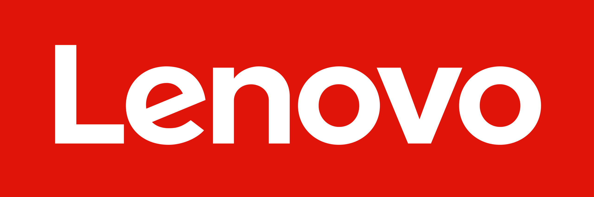
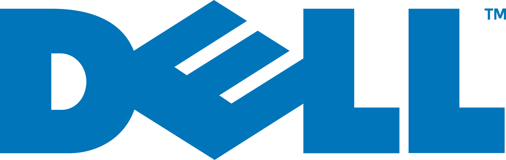
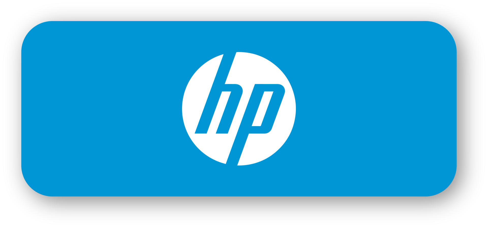

Santiago Castrillon
 santiagocastrillon 234
santiagocastrillon 234
A Quick Tech é uma empresa de técnologia atuante a mais de 10 anos, realizando o serviço de manuseio, venda e suporte de desktops, e também atendimento a outras empresas de pequeno ou médio porte. Nossa missão principal é "Promover soluções de TI com alta qualidade e eficiência, buscando satisfação dos clientes e inovação".
Missão:Promover soluções de TI com alta qualidade e eficiência, buscando satisfação dos clientes e inovação.
Nossos valores:
Nossa Visão: Se destacar entre as empresas de TI buscando ascensão empresarial e melhoria da qualidade de serviço.
Sobre a Quick Tech:
Nossa empresa tem 35 funcionários e é dividida em duas partes: temos um prédio da empresa onde nossos funcionarios atuam em um espaço totalmente adequado e aconchegante e onde seram realizados todos os processos adimnistrativos e de consultoria com outras empresas. Juntamente ao prédio, temos uma loja física que atendera nossos clientes físicos realizando serviços de manutenação e suporte técnico.
Nossa empresa trabalha em parceria com outras empresas de técnoliga, como:
 Lenovo Global Corporate
AsusTec Computer Inc
 Dell Inc
 Hewlett-Packard Company
Mantemos quatro empresas como o nosso foco de serviço. Cada uma dessas empresas possui seus compenentes próprios, então reduzir o gama de equipamentos que iremos trabalhar resulta em um trabalho de maior qualidade e que alcance mais pessoas, tendo em vista o foco que teremos e que são empresas conhecidas.
santiagocastrillon 234
fernandonamba
lucassantos_3
vitormachad00
vinistain

Rua não sei onde, Campinas, SP

(19) 7777-559
.png)
(19) 97777-5599

Quicktech@gmail.com
.png)
8:00 - 22:00